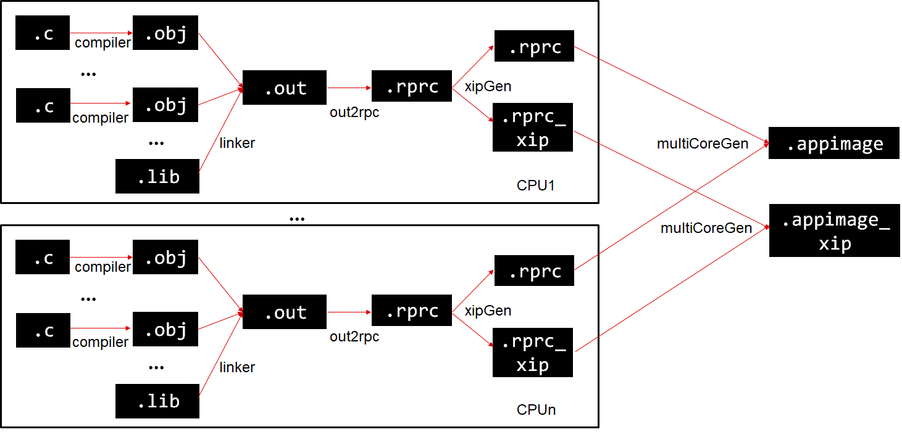
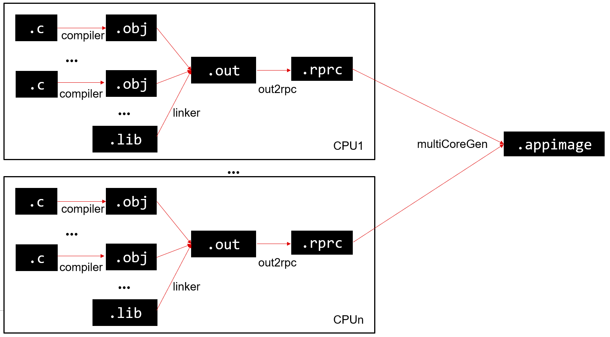
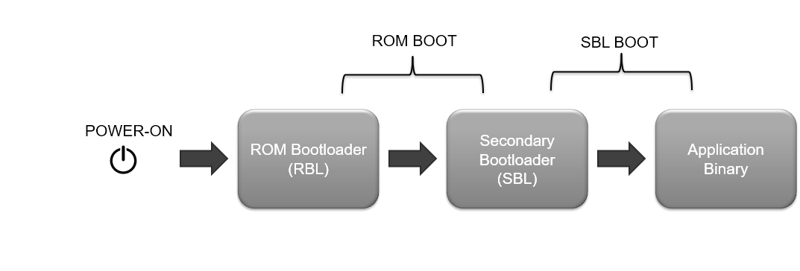
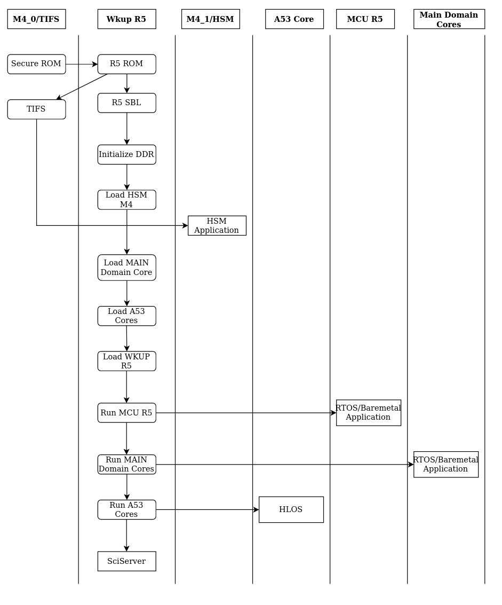

Introduction
Booting user defined applications on a SOC involves multiples steps as listed below,
- Firstly, there are multiple steps involved to convert a user application, created using a compiler+linker toolchain, into a binary format that is suitable to be booted by the SOC
- Next, we need to flash this binary to the EVM flash
- Finally, when the SOC is powered on, the previously flashed binary is executed.
- After powering on the EVM, the bootflow takes place mainly in two steps
- ROM boot, in which the ROM bootloader boots a secondary bootloader or an SBL
- SBL boot in which the secondary bootloader boots the application
- Note, that a system application itself can consist of multiple CPU specific application binaries that all collaborate together to realize the overall system goal.
This section details these steps and gives an overview of the bootloaders to understand the process better.
Additional References
See also these additional pages for more details and examples about the boot flow,
- To understand different secondary bootloader (SBL) examples see,
- To understand the flashing steps, see Flashing Tools
- To understand the boot image creation tools, see Booting Tools
Preparing the application for boot
- Note
- To see the exact sequence of steps in which applications and secondary bootloader (SBL) are converted from compiler generated .out files to boot images, see the makefile
makefile_ccs_bootimage_gen that is included in every example and secondary bootloader (SBL) CCS project.
-
If you are using makefile based build, then see the file named
makefile in the example folder.
Shown below are the different steps that are done to convert the compiler+linker generated application .out into a format suitable for flashing and booting
- For each CPU, the compiler+linker toolchain is used to create the application .out "ELF" file which can be loaded and run via CCS
- The below "post build" steps are then used to convert the application .out into a "flash" friendly format
- For each CPU,
out2rpc is used to convert the ELF .out to a binary file containing only the loadable sections. This is called a RPRC file.
- For each CPU,
xipGen is used to split this RPRC file into two RPRC files.
- One RPRC, containing the section that during boot need to be loaded to RAM
- Second RPRC, containing the section that during boot are not loaded to RAM but are instead "eXecuted In Place", i.e XIP
multiCoreGen is then used to combine all the non-XIP RPRC files per CPU into a single .appimage file which is a concatenation of the individual CPU specific RPRC files.multiCoreGen is used again to combine all the XIP RPRC files per CPU into a single .appimage_xip file which is a concatenation of the individual CPU specific RPRC XIP files.
- This
.appimage and .appimage_xip is then flash to the EVM

Post build steps
- For each CPU, the compiler+linker toolchain is used to create the application .out "ELF" file which can be loaded and run via CCS
- The below "post build" steps are then used to convert the application .out into a "flash" friendly format
- For each CPU,
out2rpc is used to convert the ELF .out to a binary file containing only the loadable sections. This is called a RPRC file.
multiCoreGen is then used to combine all the RPRC files per CPU into a single .appimage file which is a concatenation of the individual CPU specific RPRC files.
- This
.appimage is then flash to the EVM

Post build steps
Flashing the application for boot
- Once the application image (
.appimage) is created one needs to copy or flash these to a supported boot media so that the application can start executing once the SOC is powered ON
- When flashing the application we also need to flash a bootloader or SBL image.
- See Flashing Tools for detailed steps that are done to flash a user application
Booting the application
After a SBL and application image is flashed, shown below is the high level boot flow, after the SOC is powered on.

HIGH LEVEL BOOTFLOW
ROM Boot
- As soon as the EVM is powered ON, the ROM bootloader or RBL starts running. The RBL is the primary bootloader.
- Depending on which boot mode is selected on the EVM, the RBL will load the secondary bootloader or SBL from a boot media (OSPI flash, SD card or via UART).
- ROM also loads TIFS binary to TIFS Cortex M4, board configuration data to the predefined locations.
- Rest of the booting is done by the SBL.
- The RBL expects the image it boots (SBL in our case) to always be signed. Refer Booting Tools for more information on signing scripts.
SBL Boot
- The SBL is essentially an example application of the bootloader library.
- We call it a secondary bootloader because it is booted by the RBL, which is the primary bootloader.
- An SBL typically does a bunch of SOC specific initializations and proceeds to the application loading.
- In case of J722S EVM, the SBL loads the DM Firmware to DM R5F.
- Depending on the type of SBL loaded, SBL looks for the multicore appimage (refer Booting Tools for more on multicore appimage) of the application binary at a specified location in a boot media.
- If the appimage is found, the multicore appimage is parsed into multiple RPRCs. These are optimized binaries which are then loaded into individual CPUs.
- Each RPRC image will have information regarding the core on which it is to be loaded, entry points and multiple sections of that application binary
- The SBL uses this information to initialize each core which has a valid RPRC. It then loads the RPRC according to the sections specified, sets the entry points and releases the core from reset. Now the core will start running
Secondary Bootloaders
Depending on the boot media from which we load the application binary, we have multiple SBLs like sbl_ospi,sbl_uart etc. A bare minimum SBL called the sbl_null is also included which aids the users to load their applications via CCS.
SBL Boot Flow Diagram

SBL BOOTFLOW
SBL NULL
- The
sbl_null is a secondary bootloader which doesn't load any application binary, but just does the SOC initialization and puts all the cores in WFI (Wait For Interrupt) mode.
- This is referred to as the SOC initialization binary, refer Flash SOC Initialization Binary for more on this.
SBL UART
- The
sbl_uart is a secondary bootloader which receives the multicore appimage via UART, stores it in memory and then does the parsing, core initialization etc.
- To boot an application using the
sbl_uart, you can refer to UART Bootloader Python Script subsection. Detailed steps on the usage is mentioned in the same subsection.
Preparing the SBL for boot
The SBL is like any other application, created using the same compiler and linker toolchain. However the steps to convert the application .out into a bootable image are different for SBL as listed below
- The SBL entry point needs to be different vs other applications. On J722S after power-ON ROM boots the SBL and sets the entry point of SBL to R5FSS0-0. This is done by specifying a different entry point
-e_vectors_sbl in the linker command file for the SBL application.
- Other special factors for SBL application are listed below
- After entering
main(), make sure to call Bootloader_socLoadSysFw to load the SYSFW to DMSC M3 and setup a "board config"
- The linker command file for SBL has to place vectors at address
0x43C40000 and this is the entry point for the SBL.
- Nothing should be placed in ATCM or BTCM
- Only the region
0x43C40000 to 0x43C7C800 should be used by SBL code, data, stack etc
- After building, the SBL application
.out file is first converted to a binary format .bin using the GCC objcopy tool.
- This copies the loadable sections from the .out into a binary image stripping all symbol and section information.
- If there are two loadable sections in the image which are not contiguous then
objcopy fills the gaps with 0xFF.
- It is highly recommended to keep all loadable sections together within a SBL application.
- This
.bin file is then signed using the Signing Scripts to create the final .tiimage bootable image.
- A default key is used for this.
- This is a ROM bootloader requirement and is needed even on a non-secure device.
- This
.tiimage file can then be flashed or copied to a boot image using the Flashing Tools
 1.8.20
1.8.20